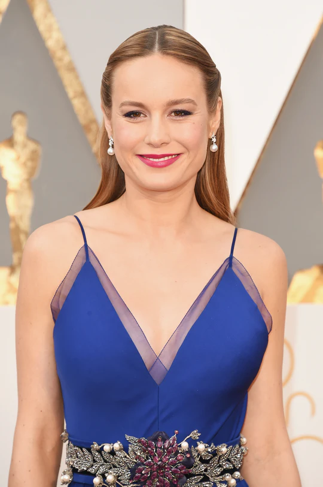
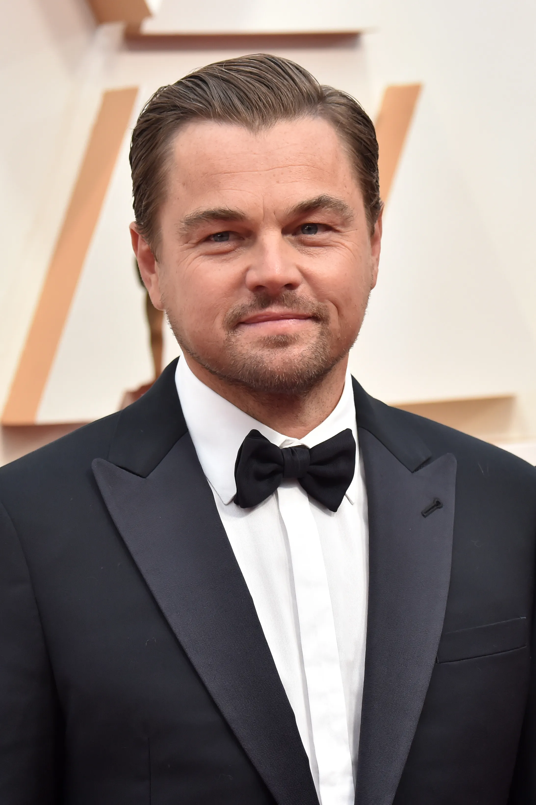
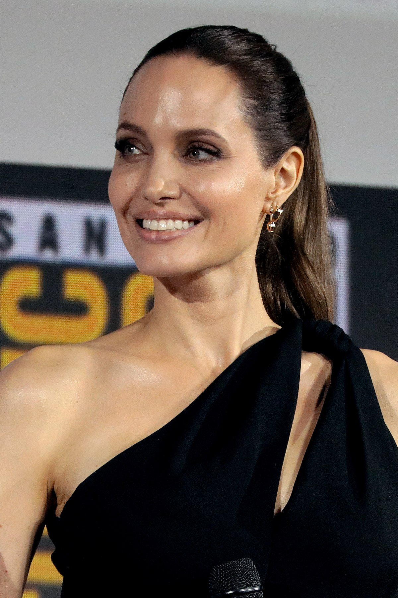
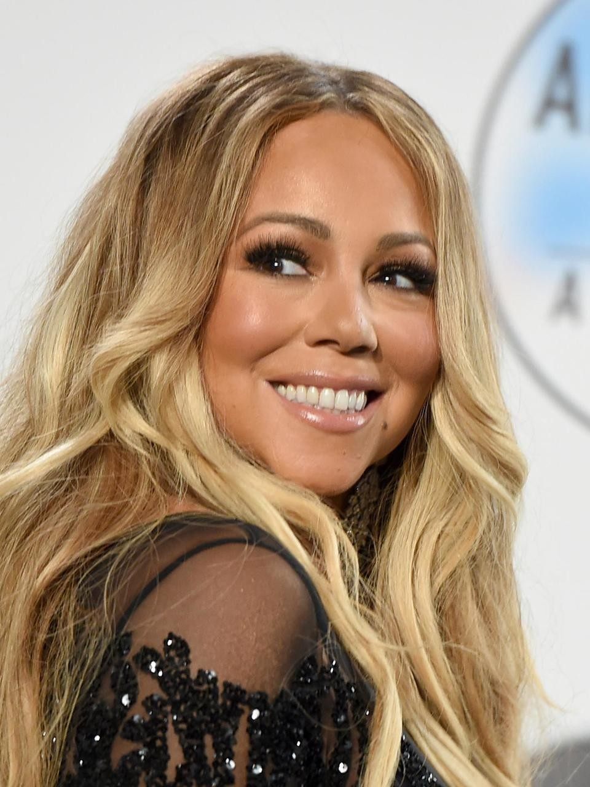

2016 Academy Awards Winners

Michael Sugar, Steve Golin,
Nicole Rocklin, Blye Pagon
Faust
Doug Mitchell, George Miller
Academy Awards: Winners and Photos |
|||
|---|---|---|---|
|
Brie Larson, Leonardo DiCaprio, and Spotlight took home the top prizes at the Academy Awards Sunday evening. Mad Max: Fury Road was the night's big winner with six total nods. Check out Awards Central for photos from the red carpet, photos from the show, press room, and parties, plus the full list of winners. |
|||
|  |  |  |  |
| Red Carpet Photos | Show Photos | Press Room Photos | Party Photos |
2016 Academy Awards Winners |
|||
| Best Motion Picture of the Year | |||
|---|---|---|---|
|
Spotlight Michael Sugar, Steve Golin, Nicole Rocklin, Blye Pagon Faust |
Mad Max: Fury Road Doug Mitchell, George Miller |